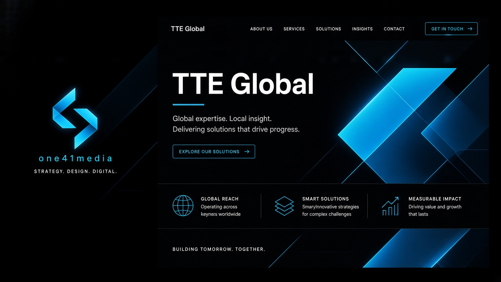
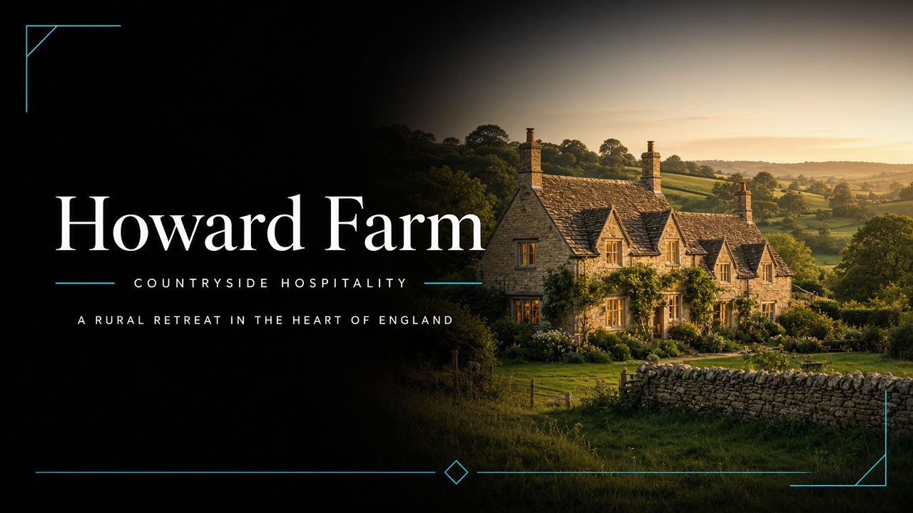
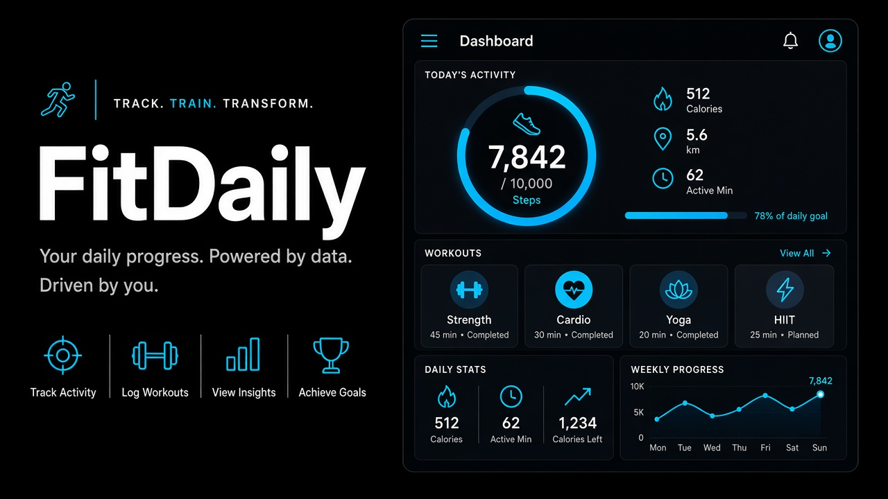

Pole Tracker
Shared field-data web app for tracking poles. Spreadsheet upload, British National Grid, interactive maps, searchable lists, and collaborative editing — powered by Supabase + Vite.
View on GitHub →Website Design · Web Apps
I’m Luke Smith — founder of one41media. I design and build practical websites and web applications that solve real problems.
Featured
A polished, modern web presence built for TTE Global. Designed to showcase services, build trust, and convert visitors — with a clean visual language and clear messaging.
Visit Site
Selected Work
A selection of websites and applications from my GitHub and client work.
Shared field-data web app for tracking poles. Spreadsheet upload, British National Grid, interactive maps, searchable lists, and collaborative editing — powered by Supabase + Vite.
View on GitHub →
Clean marketing website for Howard Farm Cottages. Showcasing accommodation with a gallery of property images and clear calls-to-action for bookings.
View on GitHub →
Lightweight daily exercise tracking web app. Simple interface focused on consistency and quick logging of workouts.
View on GitHub →Earlier daily numbers tracking tool. A focused HTML app for recording and reviewing daily metrics.
View on GitHub →About
I build websites and web apps that prioritise clarity and usefulness. Whether it’s a polished business site or a specialised tool for field data, the goal is the same: something that works well for the people who use it every day.
Recent work spans hospitality websites, exercise tracking, and geospatial field tools with spreadsheet import, maps, and shared collaboration.
Contact
Interested in a new website or a custom web app? Reach out via GitHub or check out the live work.